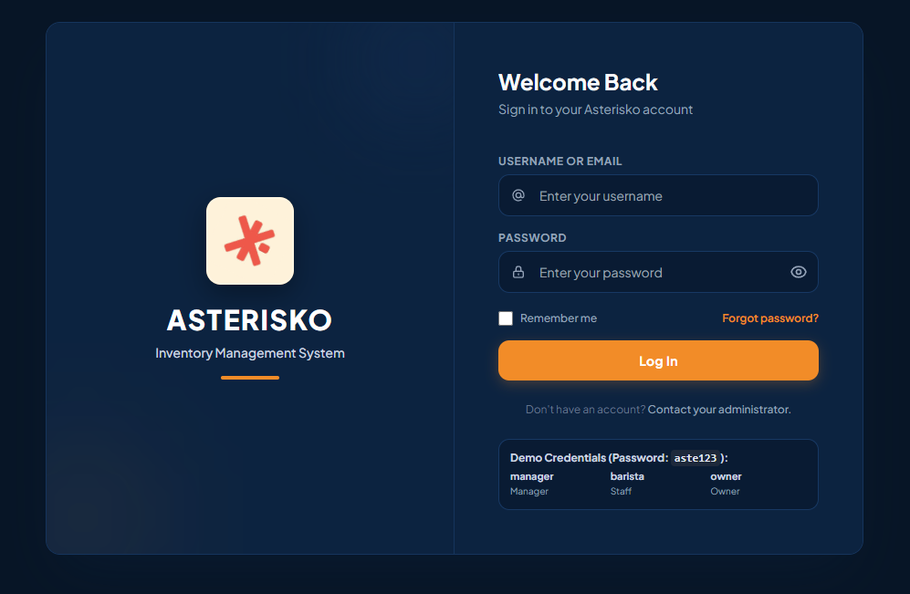

Full-Stack & Software
Proficient in Python, C/C++, Java, PHP, SQL, HTML/CSS, JavaScript, and MATLAB—building role-guarded, cloud-connected web applications from database schema to deployment.
Computer Engineer • Full-Stack Development • IT Solutions • AI
Fourth-year BS Computer Engineering student at De La Salle University - Manila with a strong foundation in both software and hardware. I build full-stack web applications, microcontroller and electronics systems, and AI-assisted tools—paired with hands-on leadership across university engineering and esports organizations.
Add your professional headshot hereassets/headshot.jpg
Proficient in Python, C/C++, Java, PHP, SQL, HTML/CSS, JavaScript, and MATLAB—building role-guarded, cloud-connected web applications from database schema to deployment.
Hands-on experience with microcontrollers, Arduino, PCB design (Eagle), and CAD tools (AutoCAD, OnShape), bridging physical systems with software logic.
Proven track record leading linkages, externals, promotions, and logistics across DLSU Engineering College Government, ACCESS, 78th ENG, and Viridis Arcus Esports.
De La Salle University - Manila
Coursework and hands-on training in Python, C, Java, HTML, PHP, MATLAB, microcontrollers, Arduino, and PCBs.
Claret School of Quezon City
Designed and developed an AR navigation system for the St. Joseph, Miguel, and Gokongwei buildings at De La Salle University - Manila. The system calculates and selects the fastest route to a target office or room, and includes an accessibility-focused routing option for mobility-impaired users to avoid physically taxing paths.

Developed an offline-first, role-guarded web inventory management platform using PHP, MySQL, Tailwind CSS, and the Google Antigravity agentic software development platform, deployed via Aiven (cloud database) and Render. Supports real-time stock deductions, physical shift variance, client-side OCR delivery intake, waste logging, purchase order generation, and financial reporting.
Collaborative project (Group 9: Angsanto, Lagco, Reantaso, Rigo) developing and evaluating LeakCNN2D, a 1.24M-parameter PyTorch CNN with an on-GPU Log-Mel spectrogram front-end and SpecAugment to classify buried water pipe leaks from Mendeley Noise Logger recordings. Tuned via Optuna (20 trials), achieving 90.99% accuracy, 90.33% test Macro-F1, and 100.00% leak recall (36/36) on held-out segments.
Built a tabular machine learning pipeline for the Global Competence in Informatics (GCI) World 2026 competition hosted by the Matsuo-Iwasawa Lab (University of Tokyo). Engineered financial and credit-history features, ran K-Fold cross-validation, and tuned LightGBM hyperparameters with Optuna.
ENGWEEK 2024
78th ENG (78th Engineering Batch Government)
Engineering College Government (DLSU USG)
ACCESS (Association of Computer Engineering Students)
Viridis Arcus Esports